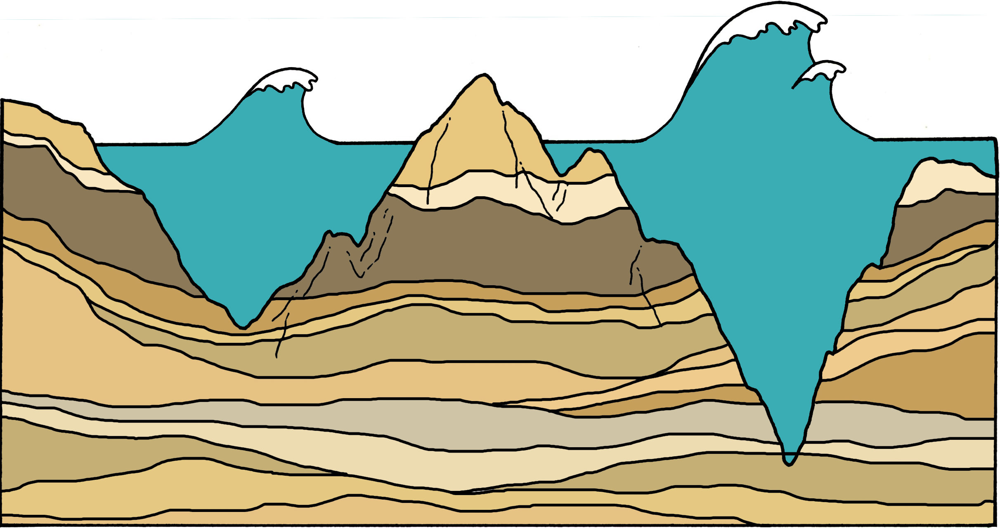
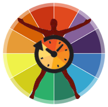

Our lab does research in the areas of human-centered design, human-computer interaction, personal informatics, ubiquitous computing, and social computing. Our high-level goal is to develop interactive technologies that promote personal and planetary welfare. The group's research style blends creativity, innovation, and critical reflection with practical application and translational impact.
Our projects focus on advancing various aspects of this process, to
(a) increase our fundamental scientific understanding about human behaviors and lived experiences with respect to a given domain of interest,
(b) use such insights to inform the design of novel systems that aim to improve targeted outcomes, and
(c) build and deploy these tools to study the impact in real-world settings and scenarios.
This iterative, “full stack” strategy enhances our ability to assess the merit, feasibility, and efficacy of an envisioned system, while foregrounding a deep empathy for the role of technology in a given context. This also means our research is inherently interdisciplinary, integrating perspectives and techniques from both technical and humanistic fields. In these ways, we strive to make empirical, methodological, technical, and theoretical contributions.
Overall, our projects span multiple domains, populations, contexts, methods, and interaction paradigms. While not an exhaustive set, the following tags reflect what problem a project targets and which sociotechnical approaches we employ to develop solutions, as well as who might use or be impacted by such engineered technologies, where the technology might be used, and how people will interact with and through the technology.
Families in Carseducationearly developmentchildrenfamiliescars
2018 –
description, AISpy
1 grant
✓ Recruiting students
Collaborators: TODO
Grant:
xxx
Biophilic designindoor spacesnature
mythumb
2018 –
exploring how computational systems might instantiate biophilic design patterns and how the digital user interfaces we regularly interact with today could satisfy our inherent need to connect with nature, promote restorative experiences, and overall enhance human wellness and flourish.
Right
Collaborators: TODO
Publications:
xxx
Interpersonal Informatics
20??–
this research is examining more collective informatics contexts, where data tracking and sensemaking practices may be socially motivated, collaboratively conducted, or otherwise extend beyond single-user audiences and requirements --- use cases for which graphical metaphors can help balance the benefits of sharing data and experiences, while providing a privacy-sensitive layer of abstraction. mood.cloud -- see job research stmt where i discuss mood cloud
1 publication
1 workshop
Collaborators: Jaime Snyder, Steve Voida, Geri Gay, Younghui Kim
Publication:
[x.x]icon
Personal Informatics in Interpersonal Contexts: Towards the Design of Technology that Supports the Social Ecologies of Long-Term Mental Health Management
Elizabeth L. Murnane, Tara G. Walker, Beck Tench, Stephen Voida, Jaime Snyder
Proceedings of the ACM on Human-Computer Interaction 2(CSCW) · Pages 1–27 · ACM · 2018
Mood Cloud is an installation that reflects both individual and aggregate sentiment of occupants who visit the building in which it resides.
VisBDmental healthvisualization

20??–
This project develops metaphor-based information visualizations that are more intuitive, meaningful, and better resonate with the lived experiences those data represent. [mental imagery people associate with the symptoms of bipolar disorder].
1 publication
Collaborators: Jaime Snyder, Steve Voida
Publication:
[x.x]icon
Visually Encoding the Lived Experience of Bipolar Disorder
Elizabeth L. Murnane, Caitie Lustig, Stephen Voida
Proceedings of the 2019 CHI Conference on Human Factors in Computing Systems (CHI) · Pages 1–14 · ACM · 2019
A timeline figure where the sizes, shapes, colors, and other graphical features of elements in the visualization correspond to levels of activity, mood, social interaction, and other customizable metrics.A water-based motif co-designed with individuals managing serious mental illness, drawn from the mental imagery they associate with the sometimes fierce, uncertain, and uncontrollable ebbs and flows of their symptoms.
Nameeducationchildrenfamiliescars
mythumb
Menu
Main
Right
Collaborators: TODO
Publications:
xxx
Check Omni projects
Past Projects
While the lab is no longer actively engaged in these specific projects, we are still very interested in these and related topics. We are always happy to discuss such ideas, including opportunities for collaboration; email works best: emurnane@dartmouth.edu
ClockWisesleepmHealthsocial media

2012–2017
Numerous dimensions of biological and neurobehavioral functioning (e.g., sleep, alertness, mood), follow roughly 24 hour patterns known as circadian rhythms. The goal of the ClockWise project is to advance a vision of "circadian computing" — a novel class of technologies that can passively sense and, in turn, provide chronobiology-aware feedback and interventions to stabilize and support personal daily rhythms.
5 publications
5 talks
1 press
Collaborators: Saeed Abdullah, Mark Matthews, Matt Kay, Julie Kientz, Dan Cosley, Geri Gay, Tanzeem Choudhury
Publications:
[x.x]icon
Circadian Computing: Sensing, Modeling, and Maintaining Biological Rhythms
Saeed Abdullah, Elizabeth L. Murnane, Mark Matthews, Tanzeem Choudhury
Mobile Health: Sensors, Analytic Methods, and Applications · edited by James M. Rehg, Susan A. Murphy, Santosh Kumar · Pages 35–58 · Springer · 2017
Mobile Manifestations of Alertness: Connecting Biological Rhythms with Patterns of Smartphone App Use
Elizabeth L. Murnane, Saeed Abdullah, Mark Matthews, Matthew Kay, Julie A. Kientz, Tanzeem Choudhury, Geri Gay, Dan Cosley
Proceedings of the 18th International Conference on Human-Computer Interaction with Mobile Devices and Services (MobileHCI) · Pages 465–477 · ACM · 2016
Smartphone app that provides personalized sleep schedules where onset, duration, and waking are chronotype-tailored and maximize circadian stability.To provide peripheral self-awareness, this live wallpaper’s color transitions in real-time with the user’s alertness levels at that moment. By default, brighter yellow saturation corresponds to higher alertness while faded blue-gray corresponds to lower alertness. From left to right, these images illustrate an individual’s early morning low alertness, late morning alertness peak, and mid-day alertness dip.Chronobiology-aware calendar background scaffolds self-awareness of alertness with a customizable color scale. Visual indicators on events provide an at-a-glance sense of whether scheduling aligns with personal alertness at that time.Specifying performance related parameters (e.g., alertness, as shown here) enables scheduling recommendations that align with personal rhythms.Chronotherapy-informed tool designed to deliver personalized schedules for diagnostic testing, medication administration, and non-pharmacological treatments (e.g., physical therapy or positive psychology exercises).
Studying smoking cessation at scalebehavior changedata miningqualitativequantitativesocial media
2013
Conducting mixed method analyses of Twitter users' content and posting activity, this project explores personal, behavioral, and social factors predictive of abstinence or relapse during attempts to quit smoking. Going forward, we hope to expand this research to the design and deployment of adaptive smoking intervention technologies that provide personalized support.
1 publication
1 talk
1 video
Collaborators: Scott Counts, Munmun De Choudhury, Merrie Morris, Nexus Group at Microsoft Research
Publication:
[x.x]icon
Unraveling abstinence and relapse: smoking cessation reflected in social media
Elizabeth L. Murnane & Scott Counts
Proceedings of the 32nd Annual ACM Conference on Human Factors in Computing Systems (CHI) · Pages 1345–1354 · ACM · 2014
This project builds systems that connect with structured information sources like DBpedia in order to explore novel solutions to the Named Entity Disambiguation problem or to support the exploration and annotation of semantically-enhanced historic maps.
1 publication
1 talk
1 poster
1 demo
Advisors: Bernhard Haslhofer, Carl Lagoze
Publication:
Best Paper Award at Web of Linked Entities workshop (WoLE'13)
[x.x]icon
RESLVE: leveraging user interest to improve entity disambiguation on short text
Elizabeth L. Murnane, Bernhard Haslhofer, Carl Lagoze
Proceedings of the 22nd International Conference on World Wide Web Companion (WWW) · Pages 1275–1284 · ACM · 2013
Prof Murnane co-founded Architexa, a research and development MIT spin-off that designed visualization tools to help software developers better understand and share important aspects of source code. As lead engineer and head of experimental features, she spearheaded numerous projects such as visualizations to diagram runtime behavior as well as tools to automatically generate visual documentation. A main focus was developing visualization techniques that addressed information overload challenges associated with complex codebases. Later extensions revolved around diagram sharing, including through development of an online social platform that facilitated programmers' collaborative practices and provided personalized recommendations for finding and contributing content.
2 publications
1 talk
2 posters
1 video
Team: Abishek Rakshit, Seth Rosen, Vineet Sinha
Publications:
[x.x]icon
Interactive exploration of compacted visualizations for understanding behavior in complex software
Elizabeth L. Murnane, Vineet Sinha
Companion to the 23rd ACM SIGPLAN conference on object-oriented programming systems languages and applications (OOPSLA) · Pages 763–764 · ACM · 2008
A collaboration between the Haystack and User Interface Design research groups in the MIT Computer Science & Artificial Intelligence Lab, Relo is an IDE-plugin built on RDF that visualizes relationships in Java source code using interactive diagrams. My work focused on studying how the level of detail shown in a visualization affects comprehension and developing new interaction techniques that enabled a user to manipulate the granularity and display of information. I additionally implemented visualizations to represent codebase evolution, visual aids to flag outdated information, and live updating of diagrams in response to codebase edits.
Advisors: Vineet Sinha, David Karger
City Browsergeographyrecommender systemvoice
2005–2007
The goal of the Spoken Language Systems (SLS) research group in the MIT Computer Science & Artificial Intelligence Lab is to create conversational interfaces that enable humans to interact with computers via naturally spoken language. SLS's CityBrowser is a multimodal system that gives restaurant information in response to spoken or typed user inquiries. My research focused on development of an intelligent recommendation agent that guided a user through interactions with CityBrowser and provided personalized suggestions for queries and restaurants.